Settings Overview
Manage the business details, appearance and data safety settings used by Alishan.
User Guide
Is guide mein Alishan app ko step-by-step samjhaya gaya hai: nayi entry banana, record dhoondhna, payment likhna, report dekhna aur backup lena. Pehle neeche Quick Start padhein, phir apne kaam wala topic kholein. Kuch samajh na aaye to search box mein koi bhi word likhein, jaise “colour”, “payment” ya “size”.
Pehli entry banane ke 5 aasaan step
- Add Entry kholeinNeeche menu mein + dabayein (computer par: Dashboard → Add Product Entry).
- Type aur Quality chuneinPehle Product Type (jaise BRA), phir Quality. Price apne aap aa jata hai.
- Colours chuneinJitne colours ka maal hai, sab ko tap karke chunein. Wo chips ban jaate hain.
- Size ki quantity bhareinSab colours ke size same hain to ek hi grid bhar dein. Kisi colour ke size alag hon to uske chip par ⇄ dabayein → New group.
- Save kareinAdd Product Entry dabayein. Entry Inventory aur Latest Qualities mein dikh jayegi.
Neeche diye screenshots app ki asli screens hain. Aapke data ya phone ke hisaab se unka rang ya naam thoda alag dikh sakta hai; steps wahi rahte hain.
1. Dashboard ko samjheinHome screen aur records ka overview
Dashboard app kholne par aane wali main screen hai. Yahan se aap apne records dekh sakte hain, search kar sakte hain aur nayi quality entry shuru kar sakte hain.
- Overview cards par tap karke us category ke records dekhein, agar card par click/filter available ho.
- Latest Qualities mein recent entries dekhein.
- Record ki poori details dekhne ke liye us record ko expand karein.
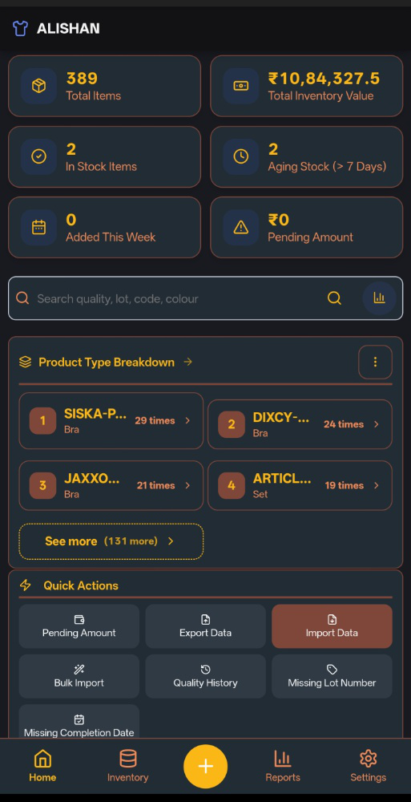
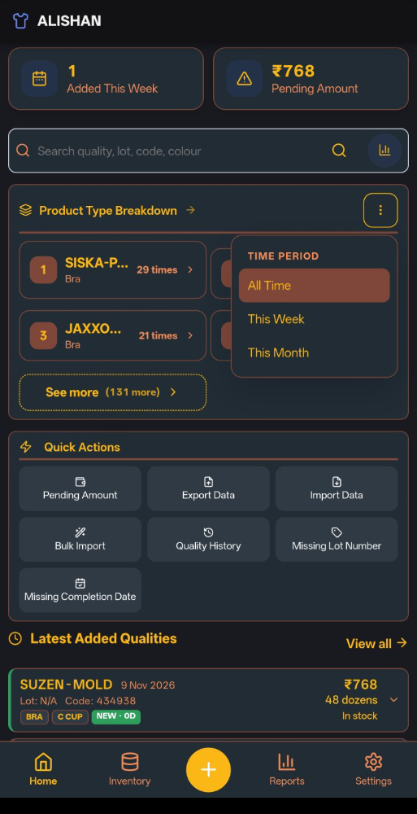
2. Nayi Quality kaise add kareinQuality type, quality, cup, colour aur size quantity
Nayi entry mein aap batate hain ki kaunsi quality ka maal aaya, kaun-kaun se colour mein, aur har size ki kitni quantity. Neeche ke steps ek ke baad ek follow karein.
- Add Product Entry page kholein. Phone par neeche ke menu ka + button, computer par Dashboard ka Add Product Entry.
- Product Type chunein (BRA, PANTY, SET ya BLOUSE). Iske baad hi us type ki quality list khulti hai.
- Quality chunein. Quality ke saath uska price pehle se juda hota hai, alag se price likhne ki zaroorat nahi.
- Cup chunein, agar us quality mein cup hota hai.
- Colours chunein. Colour par tap karne se wo chip ban jata hai. Galat chun liya to chip ke × se hata dein.
- Size ki quantity bharein. Har size ke do box hote hain: DOZEN (poore dozen) aur PCS (upar ke chhute pieces, 0 se 11). 12 pieces likhne par app use apne aap 1 dozen bana deti hai. Ab sizes 28 se 50 tak hain (28, 30, 32, 34, 36, 38, 40, 42, 44, 46, 48, 50). Jo size nahi aaya use khaali chhod dein.
- Agar kisi ek colour ke size alag hain to uske chip par ⇄ dabayein. Poori jaankari agle topic 2A. Size Groups mein hai.
- More Details mein Material (meter), Weight (kg) aur Notes optional hain.
- Add Product Entry dabayein, phir Latest Qualities ya Inventory mein check karein.
BRA · SUZEN-MOLD · B cup · colours: Moka, Rama Green, C Green. Teeno mein size 32 = 2 dozen, 34 = 3 dozen, 36 = 1 dozen. Colours chunein, ek hi grid mein 2, 3, 1 likhein, save karein. App har colour ke liye 6 dozen ginegi, kul 18 dozen.
Tip: Save se pehle ek baar upar se neeche dekh lein: Quality sahi hai, colour chips sahi hain, aur quantity sahi size ke box mein hai.
2A. Size Groups — kisi ek colour ke size alag karnaNew Entry, Edit aur card mein same system
Group ka matlab: wo colours jinke size bilkul same hain. Entry banate waqt sab colours pehle ek hi group mein aate hain aur ek hi size grid share karte hain. Agar kisi colour ke size alag hon, to sirf us colour ko alag group mein bhej dein; baaki colours waise hi ek saath rahte hain. Ye New Entry, Edit aur save ke baad card, teeno jagah ek jaise kaam karta hai.
Example — sirf Blue ka size 34 alag hai
32 = 2 dozen · 34 = 3 dozen · 36 = 1 dozen → har colour 6 dozen, do colour = 12 dozen.
32 = 2 dozen · 34 = 5 dozen · 36 = 1 dozen → 8 dozen.
Entry ka kul maal = 12 + 8 = 20 dozen. Price per dozen se amount isi total par banta hai.
Kaise karein
- New Entry ya Edit kholein aur colours chunein. Size grid ke upar GROUP ka card dikhta hai, jisme saare colour chips hain.
- Jis colour ke size alag hain, uske chip ke andar wale ⇄ button par tap karein.
- New group (own sizes) chunein. Ek naya group banta hai jisme wahi sizes pehle se bhare hote hain.
- Naye group mein sirf wo size badlein jo alag hai. Doosra group nahi badlega.
- Galti se galat group mein chala gaya to usi ⇄ se Move to Group 1 (ya jo group chahiye) chunein.
- Save karein. Inventory card mein jin colours ke size same hain wo ek saath ek table mein dikhte hain, aur har colour apne rang ke chhote card mein likha hota hai (EACH = ek colour ka total, TOTAL = us group ka jod, DZ = dozen). Alag size wala colour apne table mein dikhta hai.
Dhyan rakhein
- Do groups ke size bilkul same ho jayein to app ek note dikhati hai aur save par unhein apne aap ek group bana deti hai.
- Naya colour chunne par wo pehle group mein jata hai. Agar uske size alag hain to uske chip par ⇄ se alag kar dein.
- Colour hataane ke liye chip ka × dabayein. Agar group mein koi colour nahi bacha to wo group hat jata hai.
- Purani entries Edit mein kholne par apne aap groups mein dikhti hain. Jab tak aap save nahi karte, kuch nahi badalta.
Us colour ke chip par ⇄ → New group, phir naye group mein size badlein. Baaki colours pehle group mein ek saath rahenge.
Ya to alag group wale colour par ⇄ → Move to Group 1 chunein, ya dono groups mein same quantity likh dein. Save par groups ek ho jayenge.
Har group ka ek colour ka total, us group ke colours ki ginti se multiply hota hai. Phir sab groups ka jod entry ka total hai.
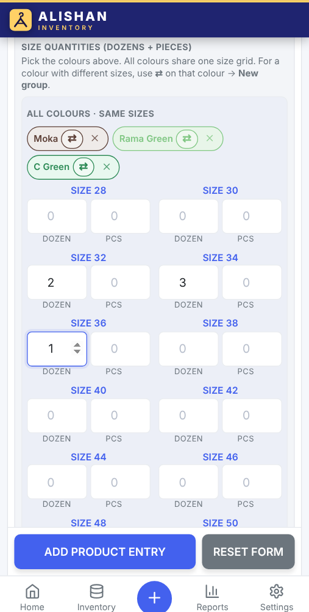
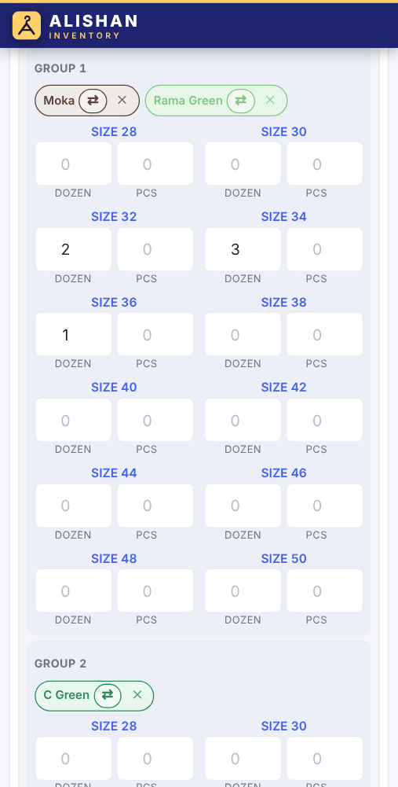
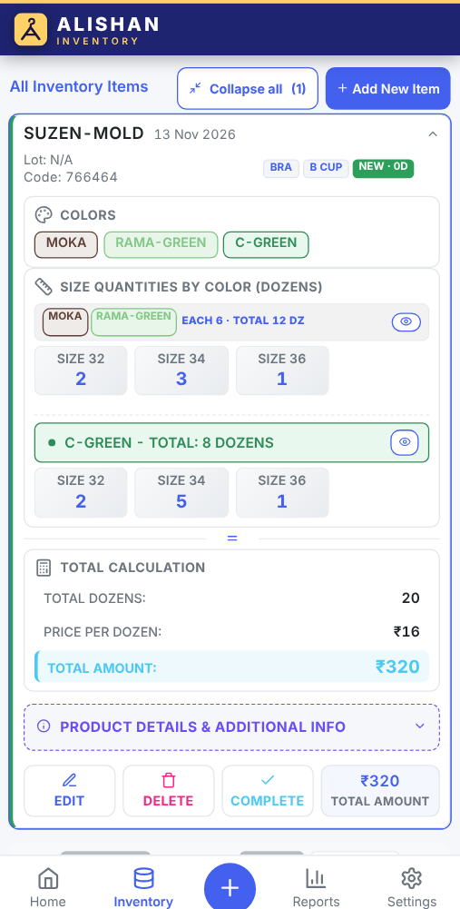
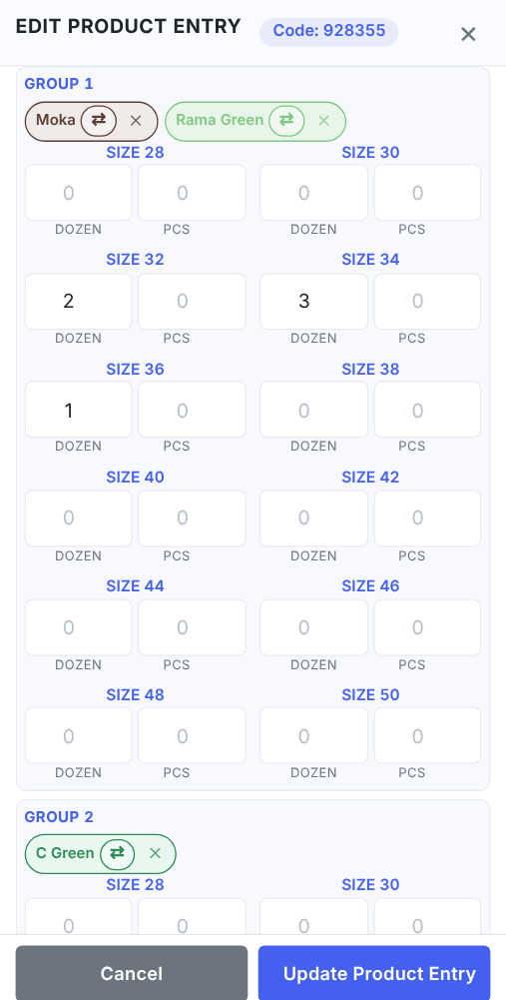
3. Record edit, Lot Number aur Maal GayaEntry save hone ke baad details update karna
- Record par Edit dabakar uski editable details update karein.
- Price per dozen (₹): Edit window mein Quality ke neeche price ka box hai. Rate badal gaya ho to yahin naya rate likh dein, app ke update ka intezaar nahi karna padega. Save karne par is entry ka amount (total dozen × price) naye rate se ban jata hai. Box ke neeche likha aata hai ki app ka rate kitna hai; Use app price dabane par app ka rate wapas aa jata hai. Box khaali chhodne par entry ka purana rate hi rehta hai.
- Purani quality: Agar kisi entry ki quality ab qualities list mein nahi hai (naam badal gaya ya hata di gayi), tab bhi wo entry Edit ho jati hai. Bas price yahin likhna hota hai.
- Lot Number quality complete/clear hone ke baad Edit mein add karein; nayi entry banate waqt Lot Number zaroori nahi hai.
- Maal Gaya field mein zaroorat ke mutabik naam ya simple text likhein. Ye note/search ke liye hai, alag tracking system nahi.
- Changes save karne ke baad record dobara check karein.
3A. Delete, Archives aur hamesha ke liye deleteGalti se delete ho jaye to wapas laana
Entry delete karne par wo seedhe mit nahi jati. Pehle Archives mein chali jati hai. Wahan se aap use wapas la sakte hain (Restore) ya hamesha ke liye delete kar sakte hain.
Entry delete karna
- Inventory mein entry ke card par Delete dabayein.
- Confirm karein. Message aata hai: Moved to Archives.
- Ab wo entry Inventory, totals, reports aur pending amount mein kahin nahi dikhti. Uske payments bhi uske saath Archives mein chale jaate hain.
Archives kholna
Settings → Archives. Yahan delete hui sab entries ki list hai: quality, colours, dozen, amount, kitne payments, aur kab delete hui. Upar search box se quality, colour ya code se dhoondh sakte hain.
Restore (wapas laana)
Entry ke card par Restore dabayein. Entry Inventory mein wapas aa jati hai, apne payments ke saath, bilkul jaisi thi waisi. Quality History mein Quality Restored likha jata hai.
Delete for good (hamesha ke liye)
- Archives mein entry ke card par Delete for good dabayein.
- Ek window khulti hai jisme likha hota hai ki kya-kya hatega.
- Confirm karne ke liye us entry ka 6 digit Code likhein (code card par aur window mein likha hota hai). Code sahi likhne par hi button chalta hai.
- Delete for good dabayein.
Hamesha ke liye delete hone par koi nishaan nahi bachta: entry, uske payments, uski Quality History aur Recent Activity ki lines, aur automatic backups mein uski copy, sab hat jaate hain. Ye wapas nahi aata.
Dhyan rakhein: Jo backup file aapne pehle download karke rakhi hai, wo app ke bahar hai, isliye uska badlav nahi hota. Archives ki entries download hone wali backup file mein nahi jaati; wo sirf is app mein rehti hain.
Old traces (purani delete hui entries ke nishaan)
Archives aane se pehle jo entries delete hui thi, unke chhote nishaan (payments, history ya activity lines) andar bache ho sakte hain, jo kisi ko dikhte nahi. Check for old traces dabayein; app batati hai kitne mile. Delete these traces se wo hat jaate hain. Aapki chalti hui entries ko kuch nahi hota.
Settings → Archives kholein aur us entry par Restore dabayein.
Nahi. Archives mein rehne tak wo kahin gini nahi jati.
Code box mein us entry ka 6 digit code bilkul sahi likhna hota hai. Code card par “Code 123456” ki tarah likha hai.
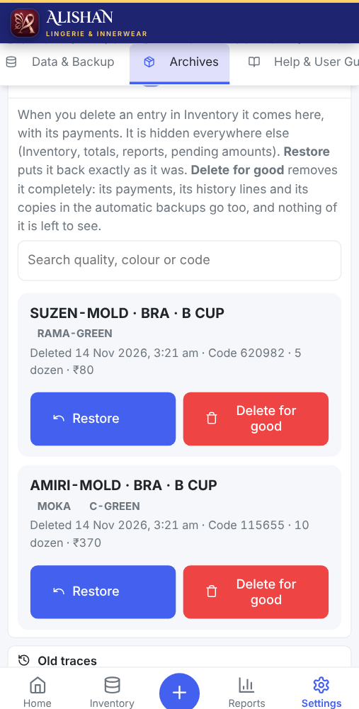
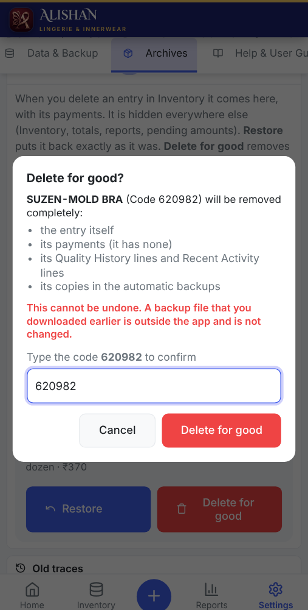
4. Complete aur Incomplete statusKaam ki current condition dikhana
Complete ka matlab quality ka kaam complete/clear ho gaya. Incomplete ka matlab kaam abhi baaki hai. Complete karne par quality out of stock ho jati hai (In Stock aur Aging se hat jati hai); Incomplete quality in stock rehti hai. Record par Complete action use karein. Complete record ko wapas Incomplete karna ho to Edit flow se status badlein, agar option diya gaya ho.
Complete karne se Lot Number ya Maal Gaya ki value apne aap delete ya change nahi hoti.
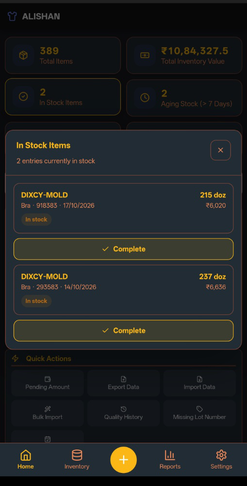
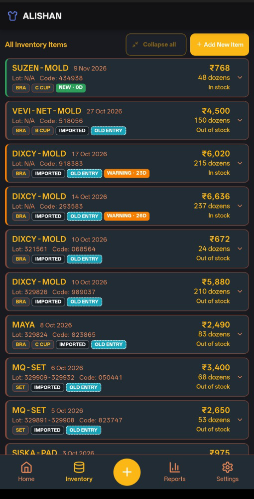
5. Search kaise kareinEk hi search box se record dhoondhna
Search box mein record se judi koi pehchaan likhein. Jaise Quality Name, Quality ID/Code, Lot Number, Colour, Quality Type, Cup, Size, Notes, Date, Price ya quantity. Search suggestions mein matching values bhi aa sakti hain.
- Ek ya zyada words type karke Search dabayein ya suggestion select karein.
- Search suggestions ko keyboard se bhi use kar sakte hain: Up/Down se move, Enter se select, Escape se close.
- Search clear karne ke liye search box ka clear (×) button use karein.
- Recent searches aur Top Searches se pehle ki searches dobara khol sakte hain.
Note: Normal search words ko record ke searchable text mein match karti hai. Specific field, range ya multiple conditions ke liye Advanced Filter ka use karein.
6. Advanced Filter kaise use kareinEk saath kai conditions lagana
- Search area mein Advanced Filter card kholein.
- Quality Type, Colour, Cup, Size, Status, Payment Status ya Date select/enter karein.
- Amount, Price, Dozen, Weight/Meter aur size-wise quantity ke Min/Max values de sakte hain.
- Lot Number, Notes aur Maal Gaya ke text se bhi filter kar sakte hain.
- Condition logic mein AND rakhen to sabhi conditions match honi chahiye; OR mein koi ek condition match ho to record aa sakta hai.
- Exclude Colour mein woh colour likhein jise results se hatana hai.
- Apply Filters dabayein. Sirf filter hatane ke liye Reset Filters use karein.
Example: Colour Black + Cup C + Status Incomplete lagane par in conditions se match hone wale records dikhenge.
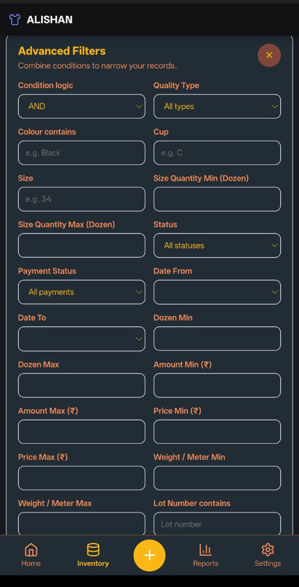
7. Advanced Sort kaise use kareinRecords ko apni zaroorat ke hisaab se arrange karna
- Advanced Sort card kholein.
- Sort first by mein pehla field select karein, jaise Entry Date, Total Dozen ya Total Amount.
- Ascending/Low to High ya Descending/High to Low chunein.
- Chahein to Then by mein second sorting field select karein.
- Apply Sort dabayein.
Example: Pehle Total Amount ko Highest to Lowest aur phir Entry Date ko Newest First rakh sakte hain.
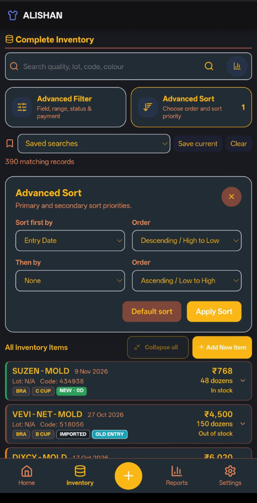
8. Saved Searches, result count aur Clear AllApni search setting dobara use karna
- Search + Filter + Sort ka current combination rakhne ke liye Save current dabayein aur naam dein.
- Saved searches dropdown se pehle save kiya hua combination load karein.
- Matching records ka count batata hai ki current search/filter se kitne records mile.
- Active filter chip par tap karke sirf us condition ko hata sakte hain.
- Clear All search, filters aur sorting ko reset karta hai.
9. Backup aur RestoreApne records ki backup copy rakhna
- Settings → Data & Backup kholein.
- Automatic Backup mein Enable automatic backup chunein, interval 1–720 hours set karein aur Save Backup Settings dabayein. Scheduled check app ke khule rehne par ya agle app/store initialization par hota hai; app band hone par background mein chalne ki guarantee nahi hai.
- Create Backup Now se current quality aur payment records ki local backup copy banayein. Backup History mein date aur record counts check karein.
- Restore Latest Local Backup se sabse latest local copy restore karein. Restore se pehle current quality/payment data ki safety copy banane ke liye confirmation diya jata hai. Restore current quality/payment records ko backup se replace karta hai.
- Browser Storage area mein browser ki reported storage usage dekhein; ye poore device ka free space nahi hota.
- Portable complete backup ke liye Home → Quick Actions → Export Data kholein, ZIP format select karein aur complete ZIP backup banayein. ZIP mein qualities, payments, history, activity aur settings shamil hote hain. ZIP restore bhi isi Export Center se hota hai.
Important: Local backup aur portable ZIP alag hain. Local backup isi browser ke IndexedDB settings mein rakha jata hai; ZIP ko device par alag file ke roop mein save karke doosre device par le ja sakte hain. Restore se pehle file/date/contents dhyan se check karein.
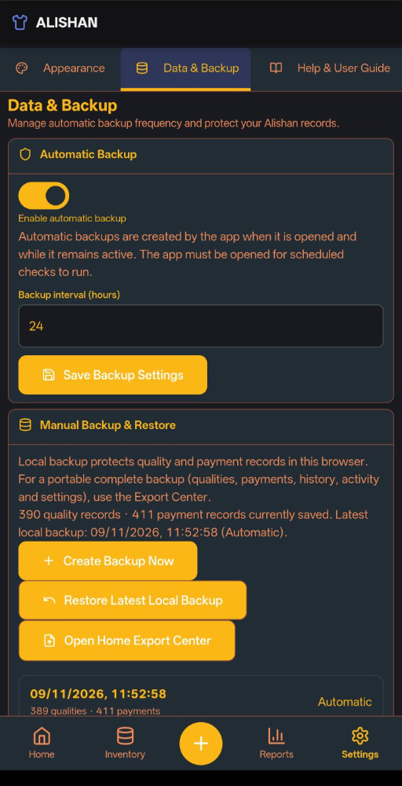
10. Appearance aur themeApp ka look badalna
Settings ke Appearance section mein available theme aur display preferences dekhein. Theme change karne ke baad app ke alag pages par bhi check karein ki text aur controls clearly dikh rahe hain.
Rose Wine theme: ALISHAN brand ke rang (gehra wine aur rose-gold) wala naya theme. Appearance mein “Rose Wine” chunein.
\nHeader ka rang: Upar ka ALISHAN header (butterfly-A logo, ALISHAN naam aur “Lingerie & Innerwear”) har theme ke saath apna rang badalta hai (har theme ka alag gradient aur accent). Phone mein upar ki status bar bhi usi rang ki ho jati hai. Header ke andar ka text hamesha saaf padhne layak rakha gaya hai.
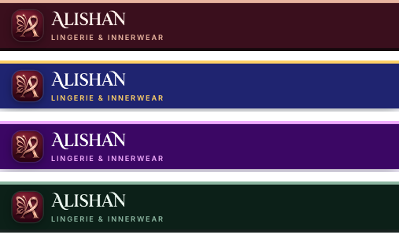
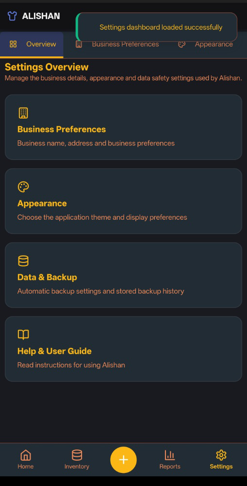
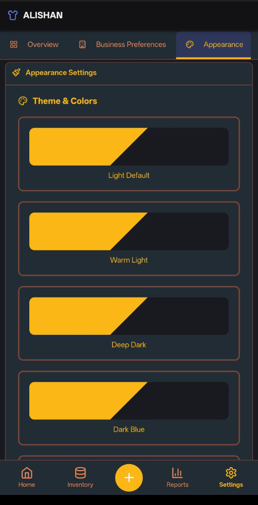
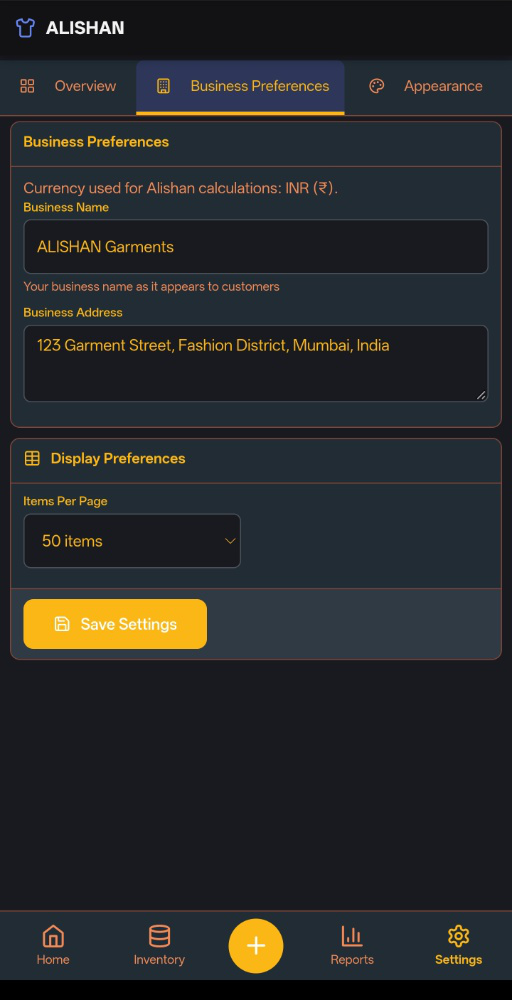
11. Inventory page aur quality cardsRecords dekhna, sort karna aur details kholna
- Inventory page par saved quality records ki list dekhein.
- Search box se Quality Name/ID, Lot Number, Quality Type, Colour, Cup, Size, Notes ya doosri saved details dhoondhein.
- Advanced Filter se multiple conditions lagayein aur Sort se latest/oldest, quality name, dozen ya amount ke hisaab se arrange karein.
- Inventory card par Edit se record update karein. Complete action ka matlab quality ka kaam clear/out of stock mark karna hai; Incomplete ka matlab wapas in stock.
- Pagination mein page size 10, 20, 50 ya 100 select karke list ke pages badlein.
Inventory aur Reports ek hi saved records se data dikhate hain; alag duplicate record create nahi hota.
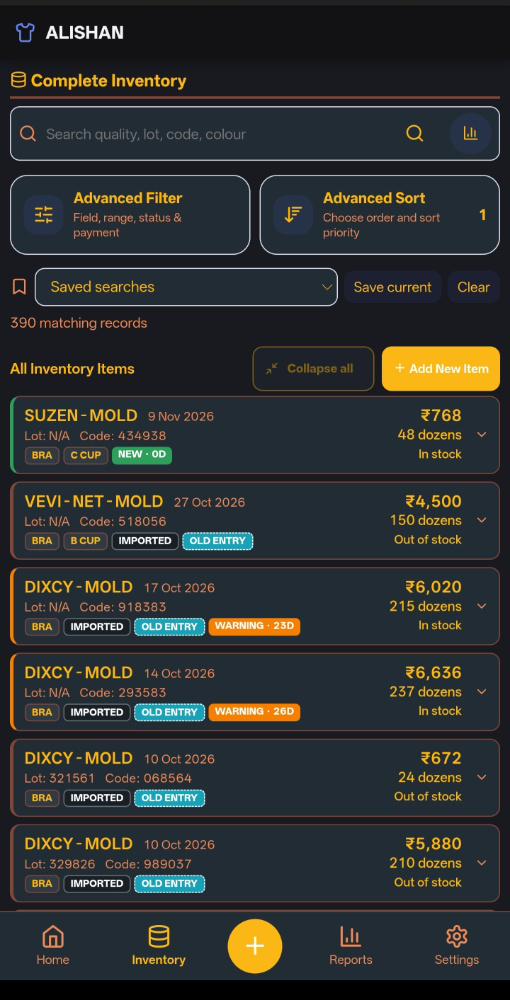
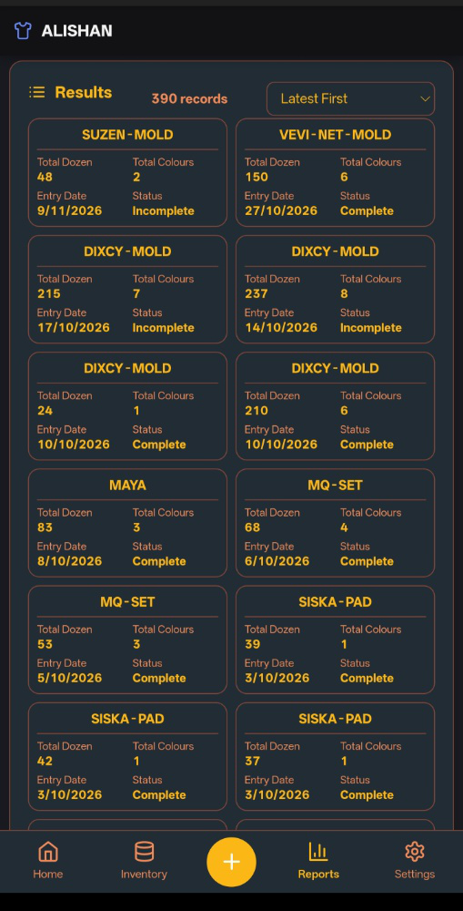
12. Dashboard cards, Quick Actions aur AgingSummary se related records tak pahunchna
- Dashboard ke summary cards par tap karke unse related records ki list khol sakte hain; Total Items aur Total Inventory Value summary-only cards hain.
- Quick Actions se Pending Amount, Missing Lot Number, Quality History aur Export Data jaise pages/actions kholein.
- Aging Stock mein Fresh 0–7, Aging 8–15, Warning 16–30 aur Critical 31+ days ke groups dekhein. Aging card kholne par us group ki qualities aur aging days milte hain.
- Product Type Breakdown mein top qualities dekhein; See more se baaki quality names aur kisi quality par tap karke usi quality ki entries kholein.
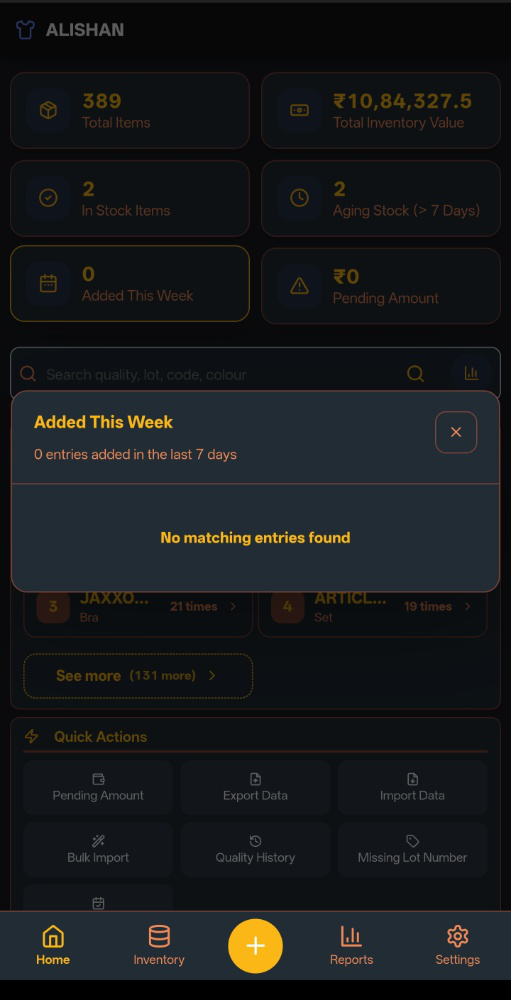
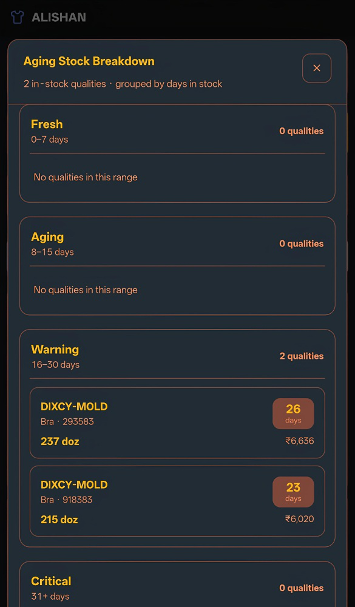
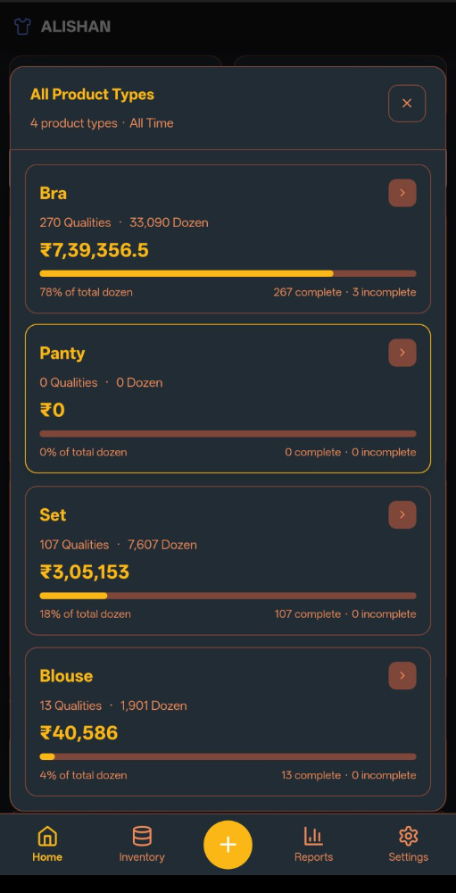
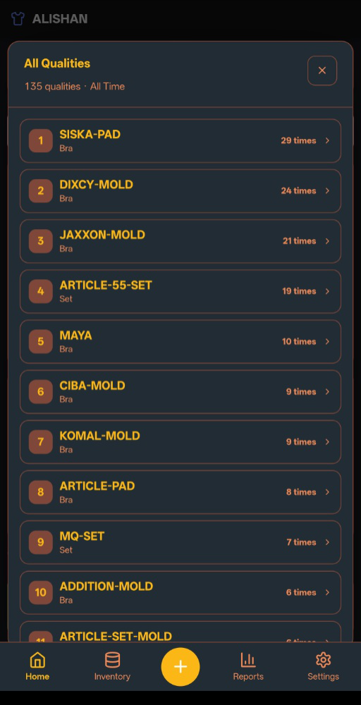
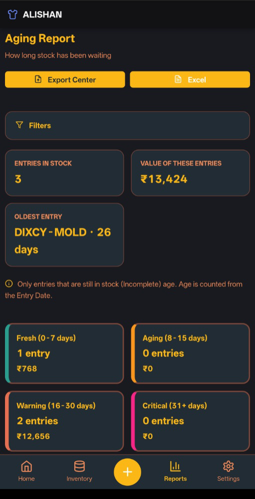
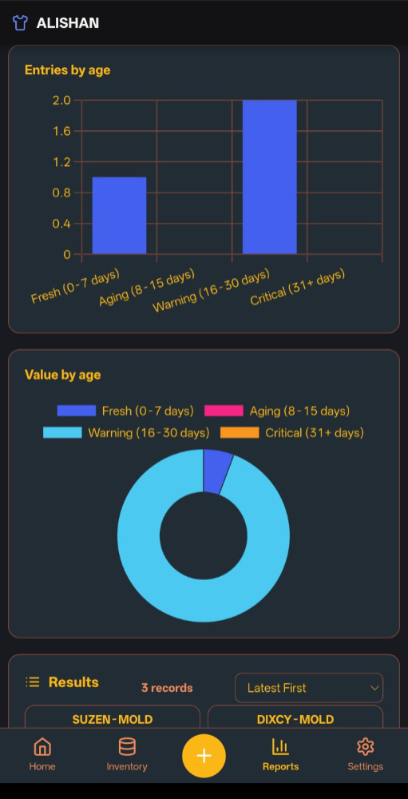
13. Pending Amount aur Missing Lot NumberPayment baaki aur lot number baaki records
- Pending Amount page par completed aur incomplete dono tarah ki qualities aa sakti hain, jab unka kuch amount receive hona baaki ho.
- Quality card mein lot, dozen, colours, dates, expected/received/pending amount aur pending days dekhein.
- Received Amount card par tap karne se us quality ka poora remaining pending amount aaj ki date ke saath receive mark hota hai; partial payment ke liye Reports ka Add Amount Received use karein.
- Missing Lot Number page par lot number ke bina records dekhein. Record ko Edit karke Lot Number save karein.
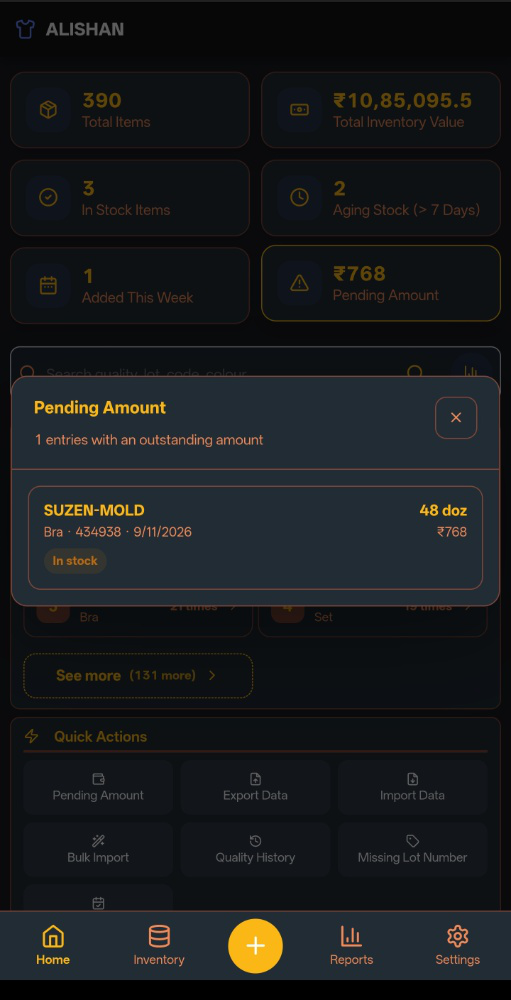
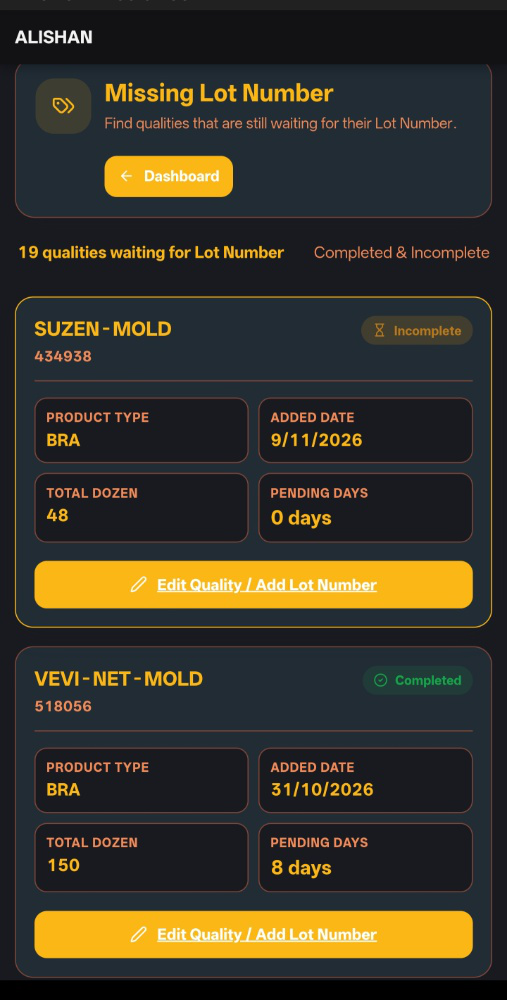
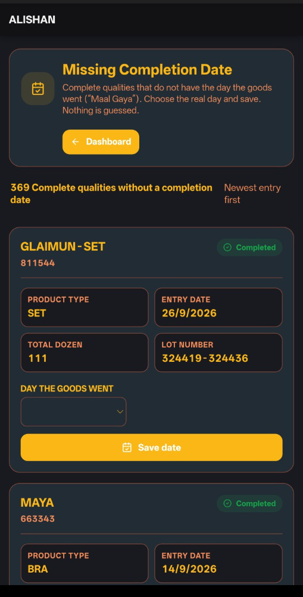
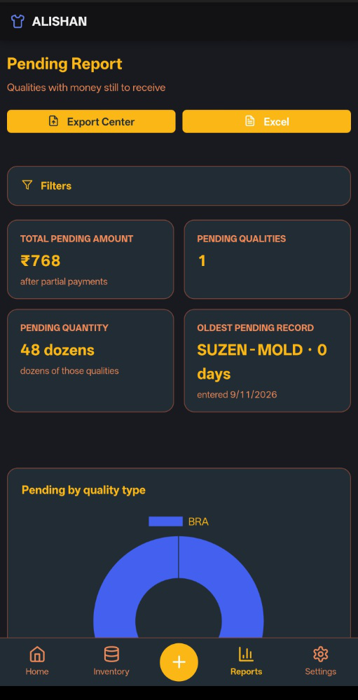
14. Reports page — report select karnaHar report ka focused detail view
Reports page par Weekly Report, Payment Report, Pending Report, Quality Report, Valuation Report, Aging Report, History Report aur Business Analysis cards hain.
- Report kholne se pehle home filters mein Time Period, Product Type aur Quality select kar sakte hain.
- Jis report ko dekhna hai usi card par tap karein. Detail view mein sirf selected report khulti hai.
- Report ke andar Filters kholkar us report ke supported date, quality, ID, type, lot, colour, cup, status ya amount filters use karein.
- Sort dropdown se sirf relevant sorting option chunein. Back to Reports se report cards par laut jaayein.
- Result card par tap karne se us record ki read-only details popup mein khulti hain. Report ka Excel ya Export Center action data export karne ke liye hai.
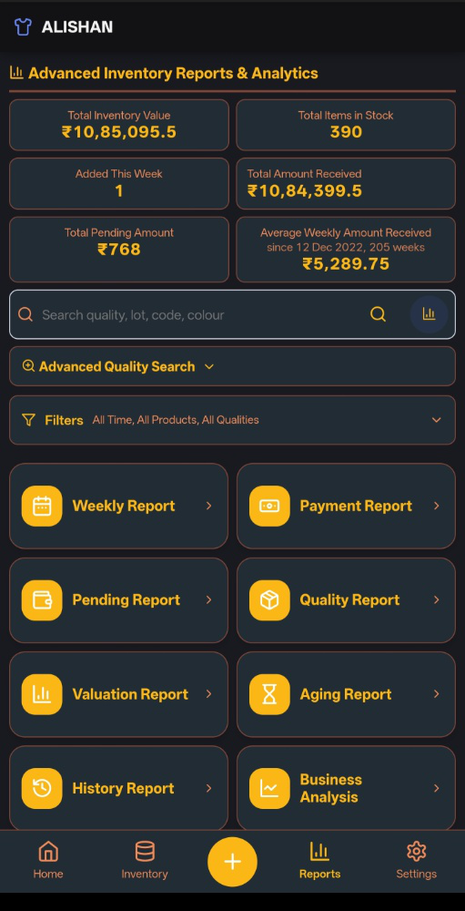
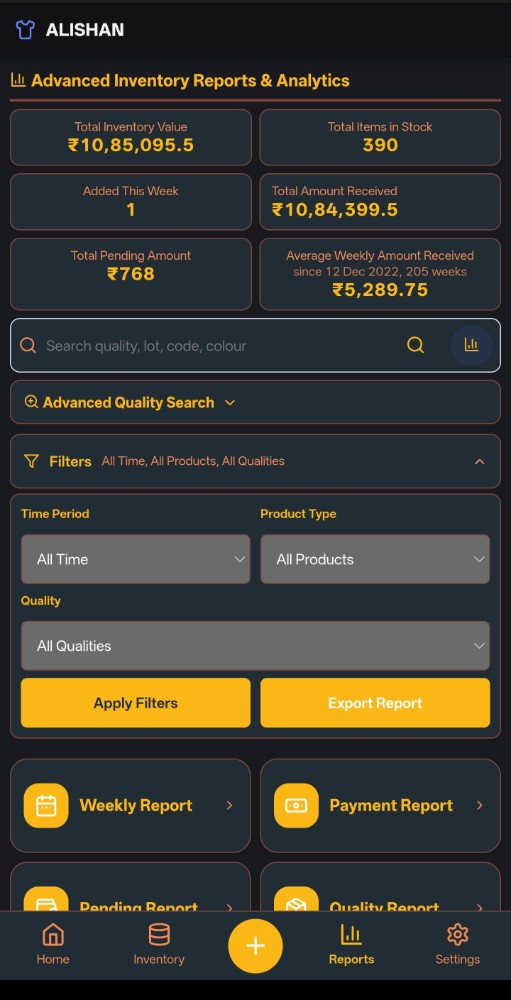
15. Payment Report, Amount History aur Weekly AmountPayment entry aur received amount ka record samajhna
- Payment Report mein received payments ka summary aur individual payment records dekhein.
- Amount Received History card ko kholkar har payment ki date, quality, lot, week, amount aur available notes dekhein. Delete sirf tab use karein jab galat payment entry ko hatana ho; delete karne se pending amount dobara badh sakta hai.
- Select Week card kholkar Monday–Sunday week chunein.
- Weekly Amount Received card kholkar us week ki payment entries aur week total dekhein.
- History aur weekly lists ki pagination se Previous/Next aur 10/20/50/100 items per page use karein. Har section ki pagination alag state rakhti hai.
- Partial ya full payment add karne ke liye Pending quality ke Add Amount Received action se amount, date aur notes bharein. Amount pending se zyada nahi ho sakta.
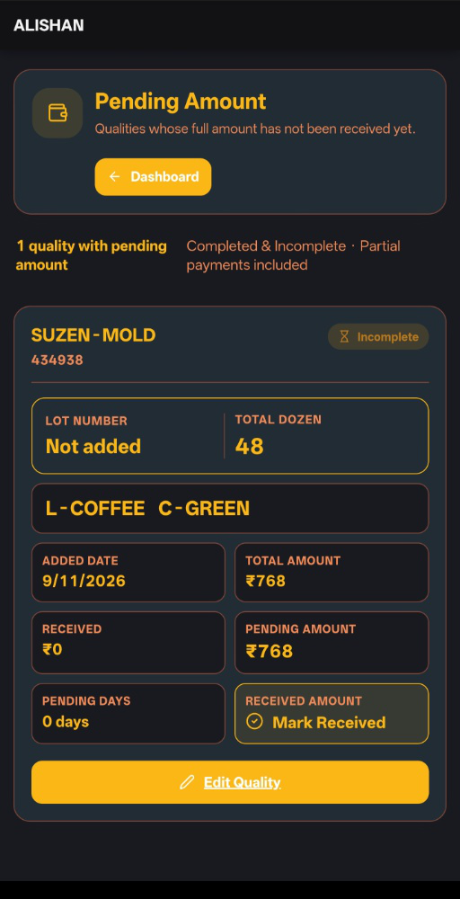
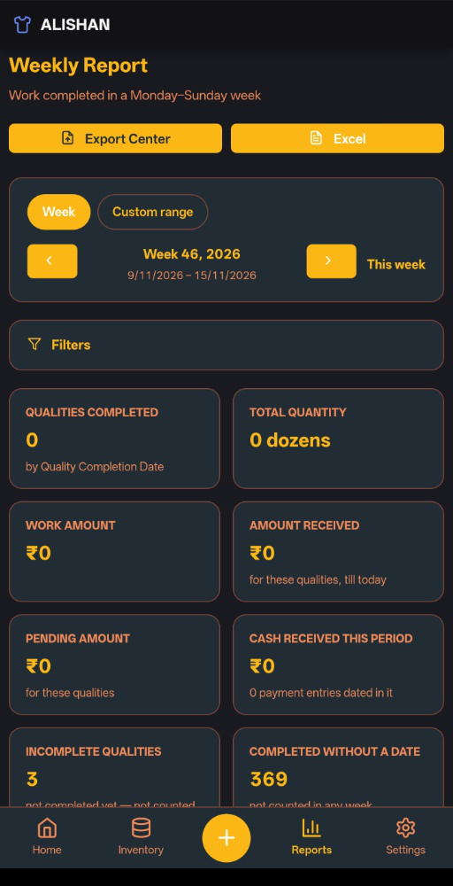
16. Quality History aur Activity LogRecord mein hue changes dekhna
Quality History page par important quality changes newest first dekhein. Update records mein Previous Value aur New Value compare karein. New Quality Added, Quality Updated, Deleted aur Complete/Incomplete jaise events aa sakte hain. Delete button sirf selected history record ko delete karta hai; ye quality record ko delete nahi karta. Report Page ka History Report Quality History aur Activity Log ko ek report view mein dikhata hai.
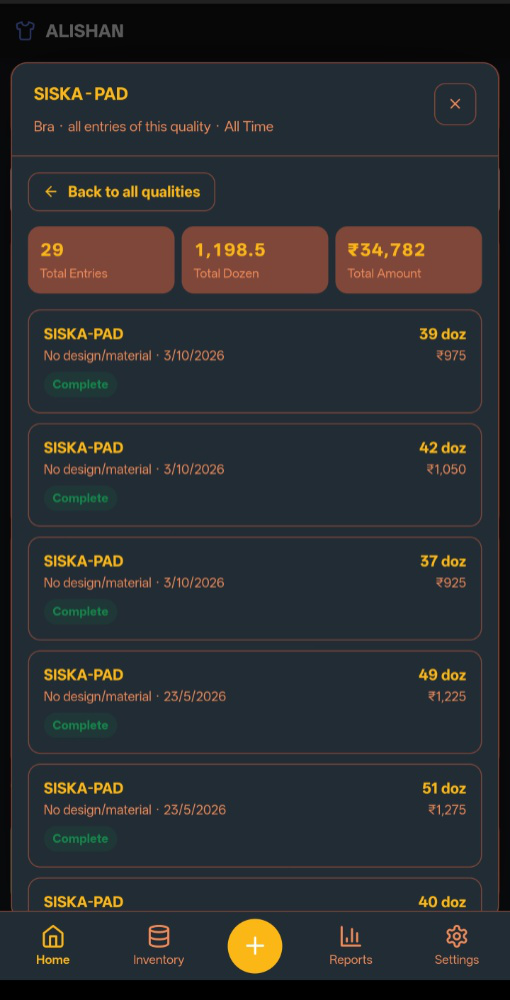
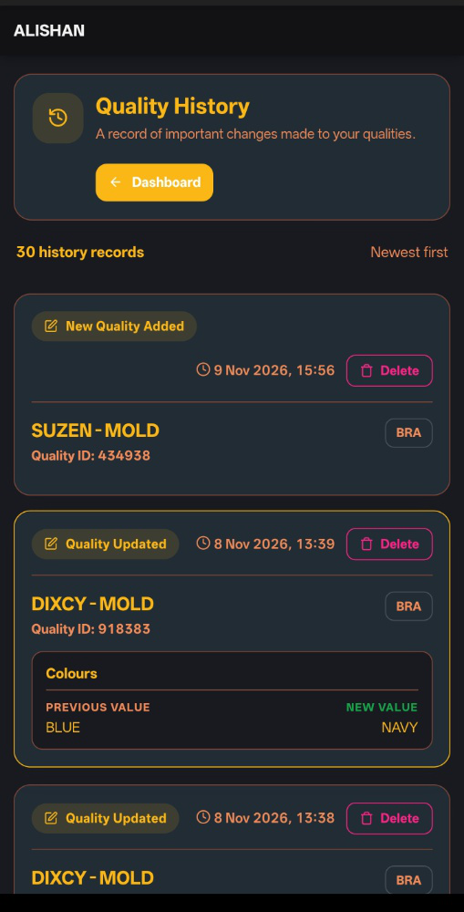
17. Export Center — data export aur complete ZIPJSON, Excel, CSV, PDF aur ZIP
- Dashboard → Quick Actions → Export Data kholein.
- Quality/Inventory, Payments, Quality History, Activity Log, Settings, Master Data aur Backup History jaise categories select karein.
- Available date range, quality, ID, lot, type, colour, cup, Maal Gaya, Notes, status aur search filters lagayein.
- JSON selected categories/rows export karta hai; Excel multiple sheets bana sakta hai; CSV first available selected sheet export karta hai; PDF printable summary/preview hai.
- ZIP complete backup ke liye hai: manifest aur data payload ke saath qualities, payments, history, activity aur settings rakhta hai.
- ZIP restore se pehle file structure/checksum validate hota hai aur current data ki safety snapshot banayi jaati hai. Sirf Export Center ke supported generated ZIP format ko restore karein.
Export data ko read karta hai; normal export se saved quality/payment records change nahi hote.
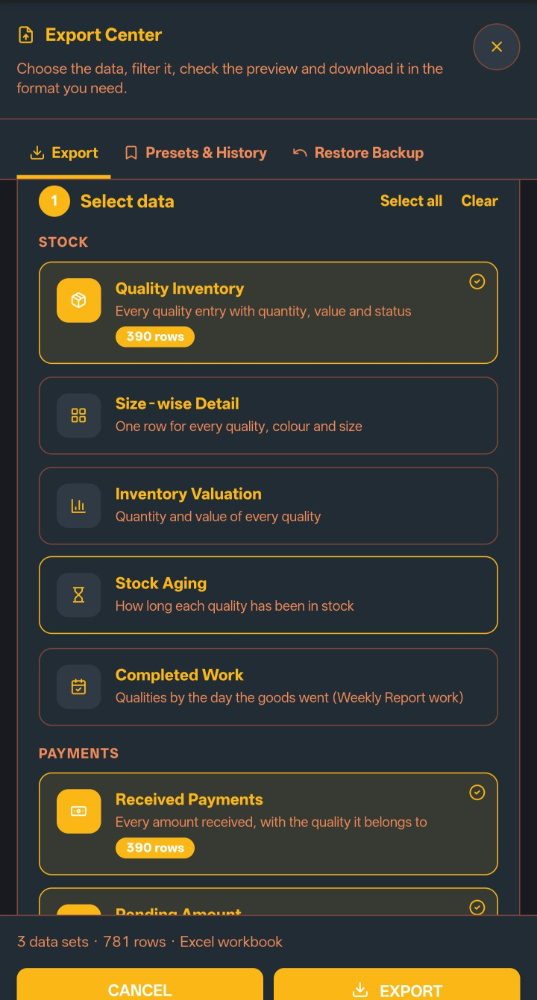
18. Data & Backup — local backup, restore aur storageSettings ke har control ka istemal
- Enable automatic backup: checkbox on/off karein. Off karne par automatic scheduled backup band rahega.
- Backup interval: 1 se 720 hours ke beech integer set karein; Save Backup Settings dabayein. App ko scheduled checks ke liye khula hona zaroori hai; closed app mein background execution guaranteed nahi hai.
- Create Backup Now: current quality aur payment records ki local copy banayein. Confirmation/status aur Backup History mein date/count check karein.
- Restore Latest Local Backup: latest local copy choose karta hai. Confirm karne se pehle current records ki safety copy banayi jaati hai; restore ke baad current quality/payment records selected backup se replace hote hain.
- Backup History: local copies ki date, quality count, payment count aur backup type dekhein. Local history limited hai; ise portable off-device backup na samjhein.
- Browser Storage: browser ke estimate API se usage/quota dikhata hai. Browser support na kare to usage unavailable ho sakta hai.
- Complete ZIP: poore app data ke liye Home → Quick Actions → Export Data → ZIP use karein. ZIP file ko device se bahar alag jagah save rakhein.
Safety: Restore current data ko replace kar sakta hai. Restore se pehle backup date aur record counts verify karein. Kam se kam ek portable ZIP ko app/browser se alag jagah rakhna behtar hai.
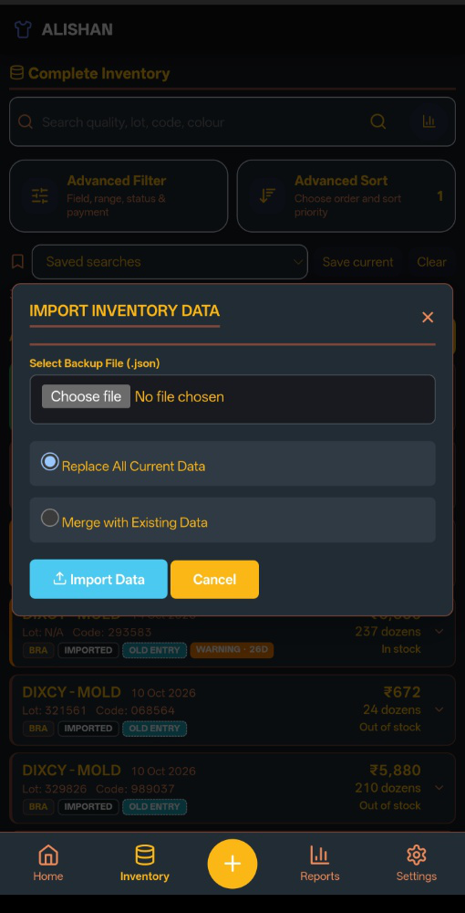
19. Mobile layout aur paginationPhone par lists aur cards use karna
- Reports ke result cards phone par do columns mein compact layout mein dikhte hain; card ke top par Quality Name aur neeche essential details hoti hain.
- Card par tap karne se read-only detail popup khulta hai; popup band karne ke liye Close, backdrop ya Escape (supported keyboard device par) use karein.
- Pagination controls ek line mein rehte hain. Bahut narrow screen par pagination row ko horizontally scroll kiya ja sakta hai; controls next line mein nahi tootne chahiye.
- Page size 10, 20, 50 ya 100 select karein. Filter/search badalne par report result page wapas first page par aata hai.
20. Bulk Import — purane records ek saath lanaAI JSON ko check, review aur import karna
- Dashboard ke Quick Actions mein Bulk Import kholein.
- Bulk Import window mein Copy AI prompt dabayein. Apne purane handwritten/typed records ki information AI ko dein aur copied prompt ke format mein JSON banwayein.
- Purane records ki stock aur payment defaults set karein, JSON file choose karein aur Check JSON & start review dabayein.
- Review list mein har entry ko alag check karein. Quality Type, Quality, Cup, Lot Number, price, stock, colours, sizes, payment aur notes ko verify/correct karein.
- App ke master colour list mein na hone wale colours ke liye matching app colour choose karein. Size mode (same sizes/different sizes) aur quantity bhi verify karein.
- Problems wali entries ko fix karein; clean entries ke liye Approve all without problems use kar sakte hain. Har record review/approve hone ke baad Import dabayein.
- Import batch history se imported batch ko identify karein. Undo this import sirf tab use karein jab us batch ko reverse karna ho; confirmation aur result check karein.
Important: Import se pehle JSON values ko original records/paper se match karein. Galat date, price, quantity, stock ya payment values aage Reports aur totals ko affect kar sakti hain.
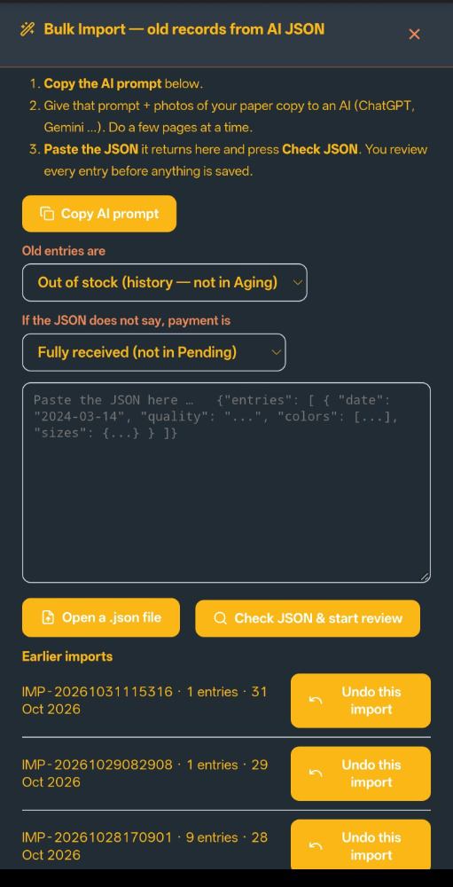
21. Quality card ka Large View (Eye icon)Size aur colour quantities ko bade view mein dekhna
- Quality card ke size/colour section mein Large view ya eye icon dabayein.
- Jab sab colours ke size same hon, to size aur quantity values bade full-screen view mein dikhti hain.
- Jab kisi colour ke size alag hon, to card mein colours ke group bante hain (same size wale colour ek saath). Jis group ke header ka eye icon dabaya hai, us group ke colours, filled sizes aur total dozen dikhte hain.
- View band karne ke liye Close/Escape use karein. Phone ko jis orientation mein padhna aasan ho, manually us tarah ghumayein; view ko kholne par automatic screen rotation zaroori nahi hai.
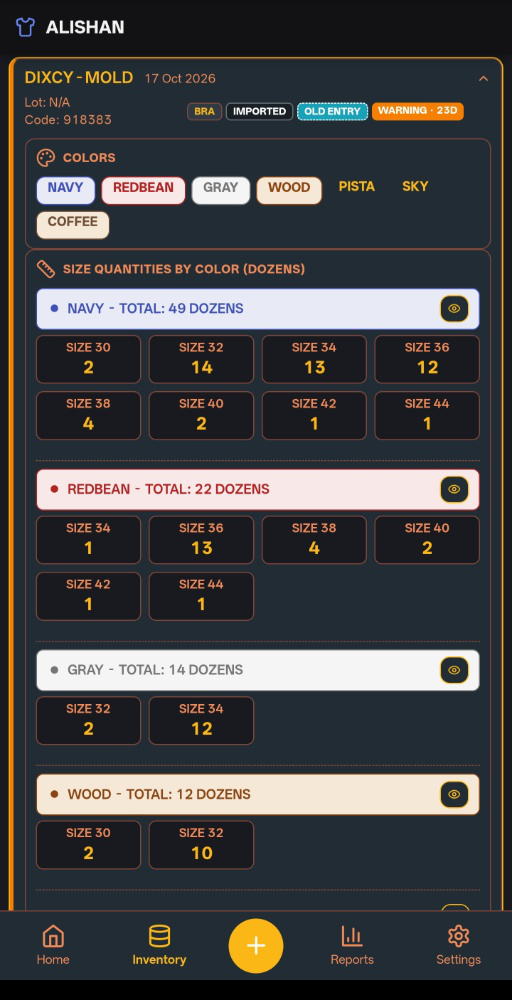
22. Complete Quality Entry Workflow — shuru se verify takForm bharne ka poora process, choices aur save ke baad check
Is guide ka goal: Nayi entry ko sahi master quality, colour, size mode aur quantity ke saath save karna. Add Product Entry page ke actual form mein Product Type, Cup Size, Quality Name, Entry Date/Time, Colours, More Details aur Sizes & Colors sections milte hain.
- Product Type: BRA, PANTY, SET ya BLOUSE mein se applicable type chunein. Iske baad matching quality options load hote hain.
- Cup Size: Sirf jab product ke liye relevant ho tab A–F mein se chunein. Jo product cup use nahi karta, usmein cup field ko applicable na samjhein.
- Quality Name: Search ya category list se sahi quality chunein. Price quality master se aata hai; Add form mein manual price field nahi hai.
- Entry Date/Time: Default entry aaj ki date aur current time par save hoti hai. Purani entry record karni ho to manual date/time switch enable karke date aur time bharein.
- Colours: Colour selector se ek ya zyada colours choose karein. Search, Select All aur Clear All controls available hain.
- More Details: Material (meters), Weight (kg) aur Notes optional fields hain. Inhe zaroorat par expand karein.
- Size groups: Colour chunne par sab colours ek hi group mein aate hain aur ek hi size grid share karte hain. Kisi colour ke sizes alag hon to us colour ke chip par ⇄ dabayein aur New group chunein; baaki colours ek saath rahenge. Colour ko kisi dusre group mein bhi bhej sakte hain. Jin groups ke sizes bilkul same hon wo save par ek ho jaate hain.
- Quantity: Har size ke liye dozens aur loose pieces enter karein. Kisi size mein quantity nahi hai to use zero/blank chhodein; kam se kam ek size quantity zaroor honi chahiye.
- Save and verify: Add Product Entry dabayein. Success ke baad Dashboard/Inventory par quality name, colour, sizes aur total quantity check karein. Doubt ho to record ko expand karke details dekhein.
Red aur Black mein size 32, 34, 36 same hain → dono ek group mein rakhein. Agar Blue mein sirf 34 ki quantity alag hai → Blue par ⇄ → New group, aur sirf us group ka 34 badlein. Red aur Black ek group mein hi rahenge.
Common mistake: Galat group mein colour rakhne se quantity wrong colour ke against enter ho sakti hai. Save karne se pehle har group ke colour chips aur size boxes dobara check karein.
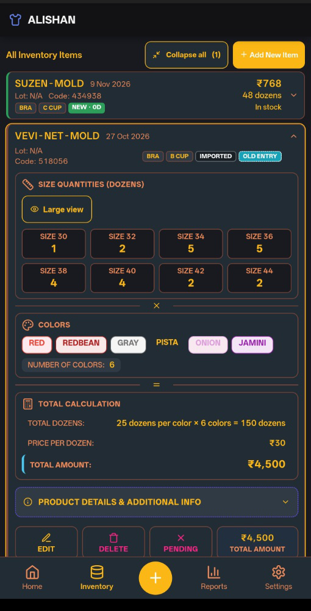
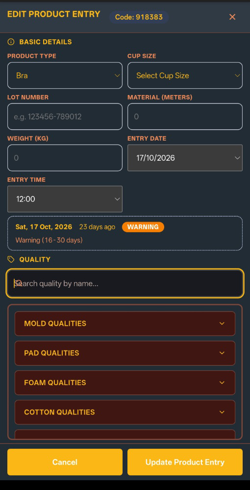
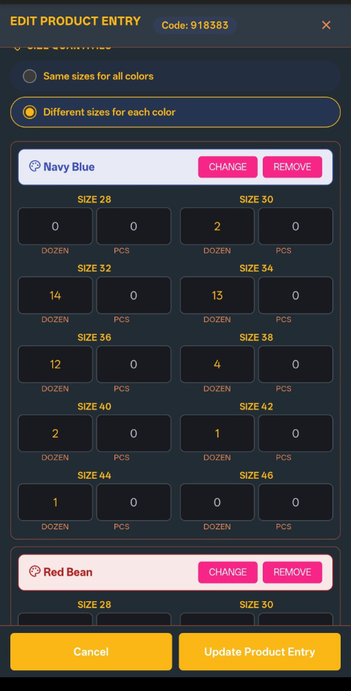
23. Quantity, Dozen aur Amount CalculationApp ke actual calculation rules aur worked examples
Alishan calculation mein base quantity pieces hoti hai. 12 pieces = 1 dozen. Quality amount ka formula hai: total dozens × saved price per dozen. App ka compact quantity display jaise 2.6 ka matlab 2 dozen + 6 pieces hai — ise decimal 2.6 dozen na samjhein.
30 ÷ 12 = 2.5 dozen. Display ise 2 dozen + 6 pieces ke roop mein bhi dikha sakta hai. Half-dozen ko round karke hataya nahi jata.
Agar total 30 pieces (2.5 dozen) aur saved price ₹40 per dozen hai: 2.5 × ₹40 = ₹100. Yeh example calculation samjhane ke liye hai; actual amount selected quality ke saved price se calculate hota hai.
- Ek group ka size set us group ke har colour par apply hota hai (sirf ek group ho to wo sab colours par). Example: 30 pieces per colour aur 2 colours select hain, toh total 60 pieces (5 dozen) calculate honge.
- Alag groups hon to har group ke colours ka apna total calculate hota hai aur sab ka jod entry ka total banta hai.
- Ab sizes 28 se 50 tak hain: 28, 30, 32, 34, 36, 38, 40, 42, 44, 46, 48, 50.
- Loose pieces 0–11 ke beech hone chahiye; 12 pieces ko 1 dozen ke roop mein carry kiya jata hai.
- Price per dozen quality master se aata hai. Record ka amount sabhi entered size quantities ko mila kar calculate hota hai.
Important: Report ya export mein quantity ko dozen aur loose pieces ke format mein dekh sakte hain. Amount verify karte waqt quality ka saved price bhi check karein.
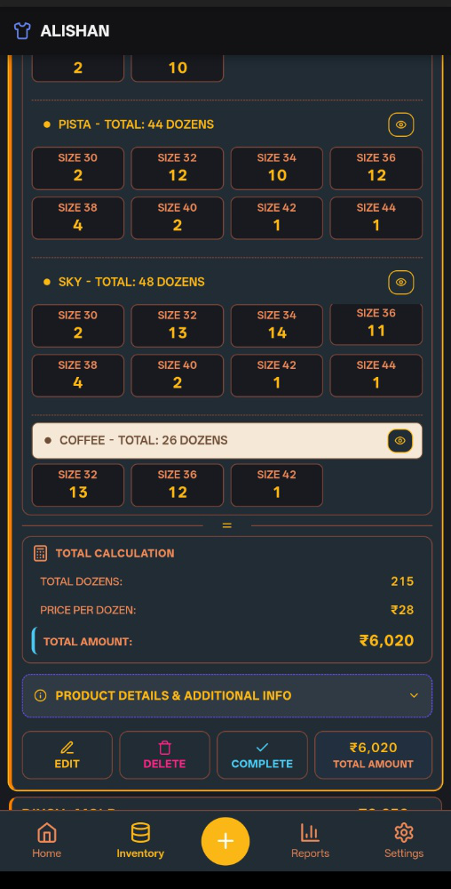
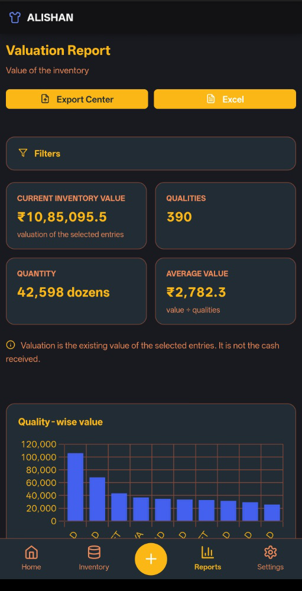
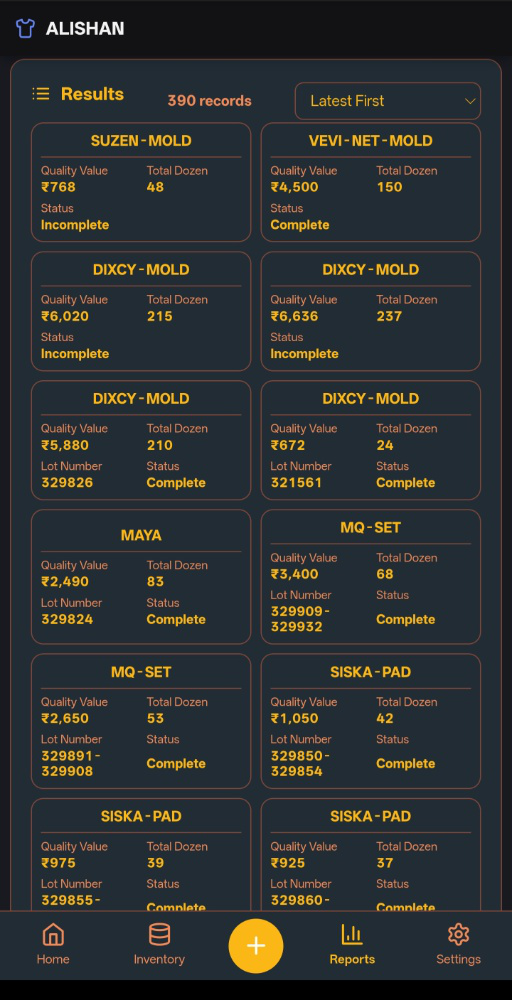
24. Complete Payment WorkflowPending se partial/full received payment aur history tak
- Pending Report ya Pending Amount page par relevant quality identify karein.
- Us quality ka Add Amount Received action kholein. Form quality, lot, type aur expected amount ki details dikhata hai.
- Amount field mein receive hua amount enter karein. Default amount remaining pending hota hai; partial payment ke liye isse kam amount enter karein.
- Payment date check karein (default aaj ki date hoti hai). Notes optional hain.
- Save karein. Amount zero se zyada hona chahiye aur remaining pending se zyada nahi ho sakta.
- Payment Report → Amount Received History mein date, quality, lot, week, amount aur notes verify karein. Weekly Amount view mein Monday–Sunday week ke hisaab se entries dekhein.
Example: Expected ₹1,000 aur pehle ₹300 receive hue hain, toh pending ₹700 hai. Ab ₹200 receive karne par total received ₹500 aur pending ₹500 hoga.
Correction warning: Payment History ka Delete action selected payment entry ko delete karta hai. Isse received total kam aur pending amount zyada ho sakta hai. Sirf galat payment entry ko correct karne ke liye use karein.
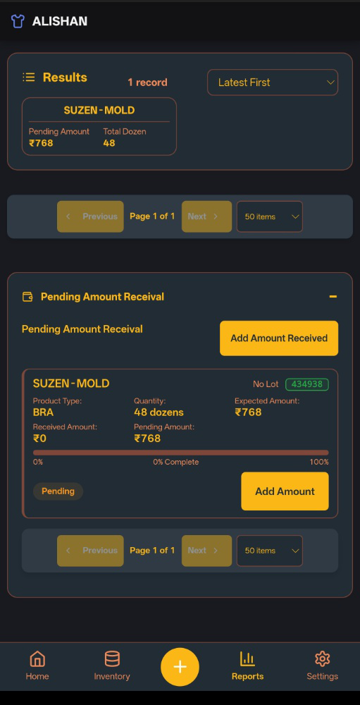
25. Reports — kaunsi report kab use karein?8 report types ka simple comparison aur workflow
Filter ka date meaning report ke hisaab se badalta hai: Payment Report mein Payment Date, Pending/Quality/Valuation/Aging reports mein Entry Date, aur History Report mein Event Date use hota hai. Weekly Report Monday–Sunday completion week dikhati hai.
Har report sirf wahi filters dikhati hai jo us data ke liye supported hain. Report open karne ke baad Filters aur Sort controls dekhein; result card tap karne par read-only details popup khulta hai. Back to Reports se report selection screen par lautein.
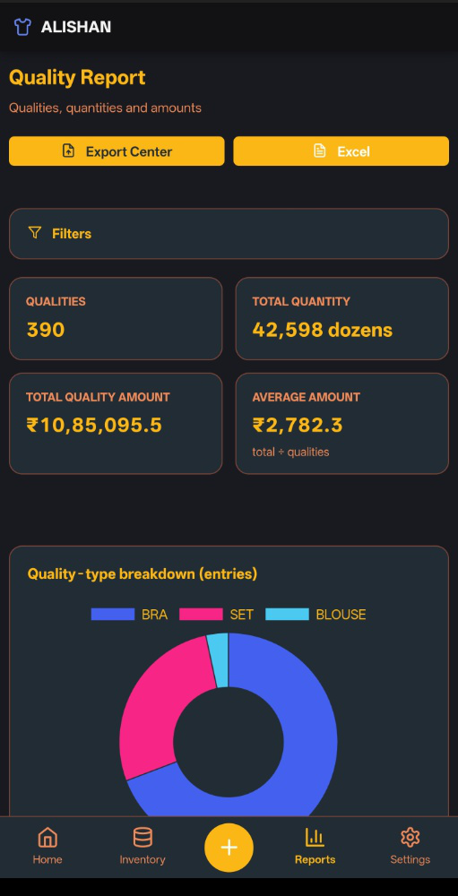
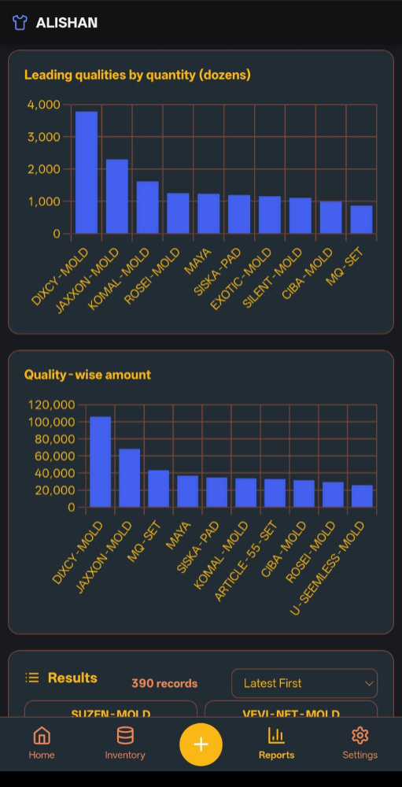
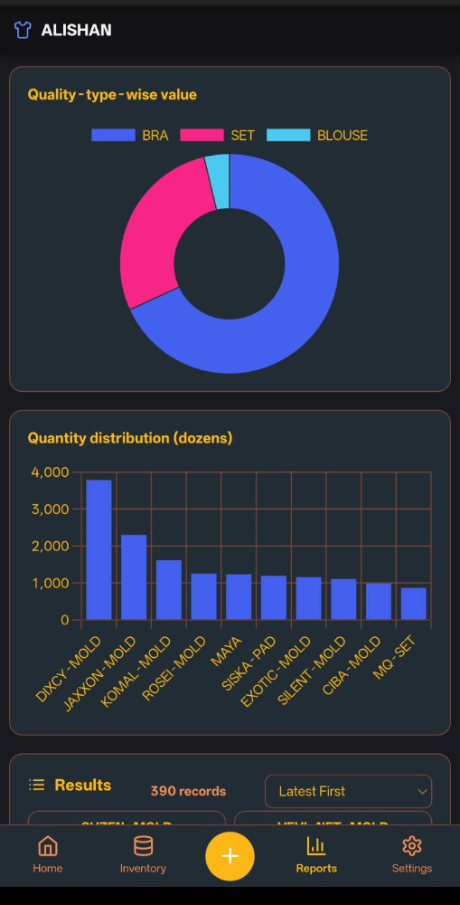
26. Quality Master Data, Colours aur SizesMaster values ka role aur entry ke saath unka relation
Quality selector product type ke hisaab se master quality list load karta hai. Selected quality ke saath uska saved price attached hota hai. Isliye entry banate waqt exact quality aur type choose karna important hai.
- Quality ka naam dekhkar hi nahi, uska product type/category bhi verify karein. Similar naam wali alag quality ko galti se select na karein.
- Colour selector master colour options se values dikhata hai. Colour search ka use karein; unknown colour ko import/review workflow mein app ke available matching colour se map karna pad sakta hai.
- Size fields dozens aur loose pieces accept karte hain. Colours ke size same hain ya kisi colour ke alag, ye Size Groups se tay hota hai (topic 2A). Sizes 28 se 50 tak available hain.
- Quality master prices ko entry form mein manual price field samajhkar edit na karein. Price badalna ho to Settings ke master data section ka use karein (agar aapke app mein ye option dikhta ho).
Before save checklist: Product Type ✓ Quality Name ✓ Cup (if applicable) ✓ Colours ✓ Size groups ✓ Quantities ✓ Optional details ✓
27. Search ke practical examplesDaily use ke liye search, filter aur sort recipes
Search box mein Lot Number ya unique code type karein. Matching suggestion aaye to select karein.
Advanced Filter mein Colour aur Status choose karein. Dono conditions ek saath chahiye toh AND logic use karein.
Advanced Filter ke Amount Min/Max fields mein range set karein, phir Apply Filters dabayein.
Advanced Sort mein Total Amount ko Descending / High to Low select karein.
Saved Searches mein frequently used Search + Filter + Sort combination save karein. Clear All current search, filters aur sorting reset karta hai.
28. Common Problems aur Safe ChecksSave, search, quantity, payment, backup aur import issues
- Quality list nahi aa rahi: Pehle Product Type select karein; phir quality search/category list dekhein.
- Colour size groups nahi dikh rahe: Colours box mein kam se kam ek colour select karein; chune hue colours size group mein chips ki tarah dikhte hain.
- Galti se delete ho gayi: Settings → Archives mein jakar us entry par Restore dabayein (topic 3A).
- Edit mein Update dabane par kuch nahi hota: Ab aisa nahi hona chahiye; purani quality bhi edit hoti hai. Agar phir bhi ho to Quality aur Colours dono chune hue hain ye dekhein, aur Size Quantities mein kam se kam ek quantity bharein.
- Rate galat laga hai: Entry ko Edit karke Price per dozen badal dein.
- Ek colour badalna tha par sab alag ho gaye: Ab aisa nahi hota. Sirf us colour ke chip par ⇄ → New group karein; baaki colours ek group mein rahenge (topic 2A).
- Chip par ⇄ nahi dikh raha: ⇄ tab dikhta hai jab entry mein kam se kam 2 colour hon, ya doosra group maujood ho.
- Do groups ek ho gaye: Jab do groups ke size bilkul same hon to save par wo apne aap ek ho jaate hain. Ye sahi hai, total nahi badalta.
- Save reject ho raha hai: Required fields, selected quality, colour aur kam se kam ek valid size quantity check karein. Loose pieces 0–11 range mein rakhein.
- Amount expected se alag hai: Total pieces, dozen conversion aur selected quality ka saved price verify karein.
- Payment save nahi ho rahi: Amount zero se zyada, date filled aur amount current pending se zyada na ho. Doosre tab mein payment add hui ho toh page refresh/recheck karein.
- Search result nahi mil raha: Search term ko chhota karein, spelling/lot/code check karein, filters reset karke dobara try karein.
- Restore/import ka doubt: Pehle current data ka portable ZIP backup banayein. Restore/Undo ko samjhe bina confirm na karein.
- App update ke baad purana UI: App ko close/reopen karke reload karein. Agar update phir bhi nahi dikhe, browser tab reload karein; data clear karne se pehle backup banayein.
Yeh checks safe first steps hain. Agar problem bani rahe, exact error message aur kis page/action par aaya uska note rakhein. Sensitive business data public message mein share na karein.
29. Alishan Glossary — common termsApp ke words ka simple meaning
- Quality
- Master list mein saved product/quality name.
- Product Type
- BRA, PANTY, SET ya BLOUSE jaisi type.
- Lot Number
- Record ko identify karne ke liye baad mein add kiya ja sakne wala lot reference.
- Group (Size Group)
- Un colours ka set jinke size bilkul same hain. Ek group ka ek hi size grid hota hai.
- ⇄ (Move)
- Colour chip ka button jo us colour ko naye group ya kisi doosre group mein bhejta hai.
- Dozen
- 12 pieces ka group.
- Loose Pieces
- Poore dozen ke alawa bache pieces (0–11).
- Quality Amount
- Total dozens × quality ka saved price per dozen.
- Received Amount
- Payment records mein save ki gayi received rakam.
- Pending Amount
- Expected quality amount mein se received amount ghataane ke baad bachi rakam.
- Aging
- Entry date se stock kitne calendar days se in stock hai.
- Activity Log
- App mein record kiye gaye activity events ka log.
- Quality History
- Quality record ke important changes ka history.
- Restore
- Backup se saved data wapas lana; current records replace ho sakte hain.
30. Naya kya hai?Har update mein user ke kaam ki naayi cheezein
v102 — 20 Nov 2026
Google sign-in chalu hone par Continue with Google dabayein aur apna account chunein. Har account ka Inventory aur Payments alag hoga. Shared phone par kaam ke baad Sign out dabayein.
v101 — 20 Nov 2026
- Add ya Edit mein size likhte hi pieces, dozen aur amount ka preview dikhega.
- Add mein naam, size aur price review karein. Sab sahi ho to Submit karein. Save hone par Quality Code milega.
- Internet chala jaaye to wahi form khol kar Save dabayein. App purani koshish ka result check karegi.
- Report detail mein maan lo ₹4,000 banta hai aur ₹5,000 mila hai. Pending ₹0 aur Extra Received ₹1,000 dikhega.
- Advanced Export mein file banne se pehle rows ki ginti check karein.
v100 — 18 Nov 2026
Theme chunne par rang turant badalta hai. Pasand background mein save hoti hai aur Inventory ka saved view reuse ho sakta hai. Backup ki list pehle sirf date aur ginti dikhati hai.
v99 — 18 Nov 2026
- Home, Inventory aur Reports ko ek baar internet ke saath kholein. Agli baar pehle se loaded view jaldi dikh sakta hai. Khule app mein pages ki files bhi device se mil sakti hain; pehli baar taiyari poori hone dein. Naye tab mein sign-in check ho sakta hai.
- Saved view · updating… ka matlab purana loaded data dikh raha hai aur naya check ho raha hai. Up to date ka matlab aakhri server check sahi hua.
- Doosre device se badlav aane par khula page lagbhag har 15 second mein check karta hai. Wapas app par aane par bhi check hota hai.
- Save, payment aur restore ke liye internet zaroori hai. Connection tootne par pehle saved record check karein, payment dobara turant na karein.
- Data dobara mangana ho to status button dabayein, ya Settings → Data & Backup → Refresh saved view use karein.
Sawal: Kya yeh backup hai? Nahi. RAM app band hone par khali ho jati hai; device par saved view browser ke rakhne tak milta hai aur adhiktam ek din purana view use hota hai. Browser ise hata sakta hai. Apna complete backup alag rakhein. Bina internet naya hisaab ya save nahi hota.
v98 — 18 Nov 2026
- Online app kholkar Inventory ya Reports dekhein; data padhne ka kaam ab halka kiya gaya hai.
- Poora backup wapas laate waqt button dobara na dabayein. Badi file mein thoda waqt lag sakta hai.
- Restore ke baad entry aur payment ki ginti milayein.
Sawal: Connection toot gaya? Page reload karke pehle dekhein ki data aa chuka hai ya nahi; turant dobara restore na karein.
v97 — 18 Nov 2026
- Online app ka address kholein aur apna diya gaya username/password bharein.
- Entry, payment aur report ka hisaab ab online hota hai. Internet chalu rakhein.
- Purane app se liya gaya poora backup, naye address par Restore se laayein. Restore ke baad records aur amounts milayein.
Sawal: Internet band ho to? Connection wapas aane par page reload karein aur save hua record check karein.
v96 — 13 Nov 2026
- Archives: Entry delete karne par wo ab Settings → Archives mein jati hai. Wahan se Restore ya Delete for good kar sakte hain. Hamesha ke liye delete hone par uske payments, history aur backup copies sab hat jaate hain (topic 3A).
- Old traces: Purani delete hui entries ke bache hue nishaan ek button se saaf ho jaate hain.
- Naya ALISHAN logo aur icon: butterfly-A logo, naya app icon aur header mein ALISHAN naam ke saath “Lingerie & Innerwear”. Home screen ka purana icon dikhe to app hata kar dobara add karein.
- Rose Wine theme: brand ke wine aur rose-gold rang wala naya theme (ab 20 themes hain).
v95 — 13 Nov 2026
- Colour cards chhote: jin colours ke size same hain unka header ab ek line jitna low rehta hai. Har colour apne rang ke chhote card mein hai aur uske saath EACH aur TOTAL (DZ = dozen) usi line mein dikhta hai. Bahut zyada colour hon to card agli line mein aate hain.
v94 — 13 Nov 2026
- Edit mein Price per dozen: ab Edit window mein rate khud badal sakte hain. App ka rate saath mein dikhta hai aur Use app price se wapas lag jata hai. Rate badalne par entry ka amount naye rate se ban jata hai aur Quality History mein likha jata hai.
- Purani quality ab edit hoti hai: jo quality qualities list mein nahi hai, uski entry mein pehle Update dabane par kuch nahi hota tha. Ab wo entry edit ho jati hai; bas price khud likhein.
- Colour cards: jab kai colours ek hi size table mein hon, to card mein har colour apne khud ke rang ke chhote card mein dikhta hai, har theme mein saaf.
v93 — 11 Nov 2026
- Naya header: gradient header, jo har theme ke saath apna rang badalta hai (v96 mein isme brand ka butterfly-A logo aaya).
- Naya app icon: Home screen par ab naya icon dikhega (purana icon dikhe to app ko ek baar band karke kholein).
- Naya User Guide: Quick Start, Size Groups ka poora topic, examples, sawal-jawab aur ye “Naya kya hai” section.
v92 — 11 Nov 2026
- Size Groups: New Entry, Edit aur card mein ek hi system. Ek colour ke size alag karne se baaki colours alag nahi hote (topic 2A).
- Naye sizes 48 aur 50 har jagah add ho gaye hain.
- Card: same size wale colours ek hi table mein dikhte hain.
- Computer par size boxes ab box ke andar fit hote hain.
Business Preferences
Currency used for Alishan calculations: INR (₹).
Display Preferences
Appearance Settings
Theme & Colors
Language & Display
Archives
Deleted entries wait here. Restore them, or delete them for good.
Deleted entries 0
When you delete an entry in Inventory it comes here, with its payments. It is hidden everywhere else (Inventory, totals, reports, pending amounts). Restore puts it back exactly as it was. Delete for good removes it completely: its payments, its history lines and its copies in the automatic backups go too, and nothing of it is left to see.
Old traces
Entries that were deleted before Archives existed can still have left small traces (payments, history lines, activity lines) that nobody can see. Check for them and remove them, so nothing is left behind.
Delete for good?
Data & Backup
Manage automatic backup frequency and protect your Alishan records.
Automatic Backup
Automatic backups are created by the app when it is opened and while it remains active. The app must be opened for scheduled checks to run.
Manual Backup & Restore
Local backup protects quality and payment records in this browser. For a portable complete backup (qualities, payments, history, activity and settings), use the Export Center.
Loading saved record and backup information…
Browser Storage
Storage usage is reported by the browser and may not be available in every browser.